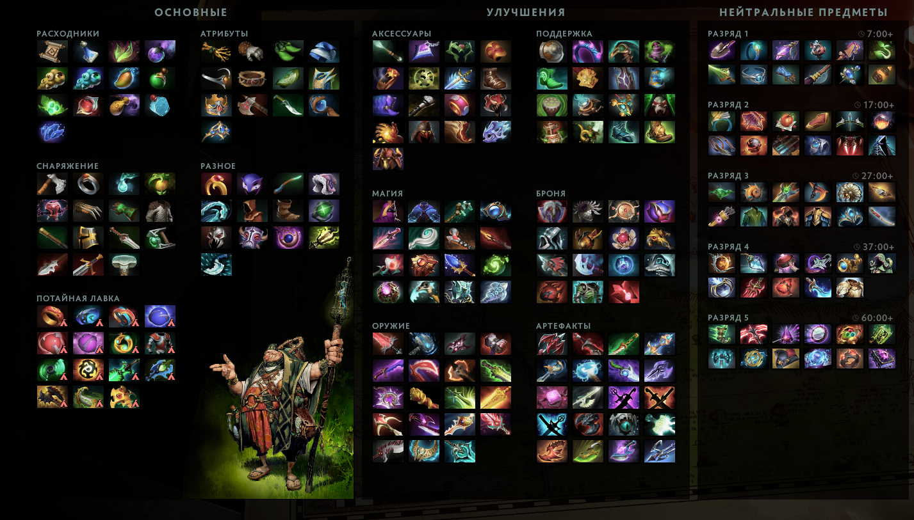

Дота 2 является одной из самых популярных многопользовательских онлайн-игр, привлекающей миллионы игроков по всему миру. Кроме развлечения, игра в Доту 2 имеет значительную актуальность в контексте бизнеса и маркетинга.
Во-первых, Дота 2 - это отличная возможность для продвижения продуктов и услуг в целевой аудитории. Многие бренды используют игру в качестве рекламной платформы, создавая специальные турниры и события, в которых участвуют известные профессиональные игроки. Такие мероприятия привлекают многотысячную аудиторию, что позволяет увеличить узнаваемость бренда и улучшить имидж компании.
Во-вторых, игра в Доту 2 требует от игроков развития таких навыков, как командная работа, стратегическое мышление и быстрое принятие решений в условиях высокой динамики игрового процесса. Эти навыки являются важными для успеха в бизнесе, особенно в сфере менеджмента и руководства.
Наконец, игра в Доту 2 также помогает развивать социальные навыки и улучшать коммуникацию с другими игроками. Это может быть полезно для бизнеса в контексте командной работы и взаимодействия с клиентами.
Наконец, игра в Доту 2 также помогает развивать социальные навыки и улучшать коммуникацию с другими игроками. Это может быть полезно для бизнеса в контексте командной работы и взаимодействия с клиентами.
Начать стоит с основ этой игры, а именно:
- В игре соревнуются 2 команды по 5 игроков в каждой
- Существует одна единственная карта на полях которой происходят сражения
- В игре существует 124 персонажа на момент создания этого руководства
Карта

подробнее о каждой из них вы можете узнать нажав правой кнопкой мыши на интересующую вас постройку
Карта — это игровое поле во всех матчах в Dota 2. Она состоит из двух сторон, одна из них для Radiant Силы Света, другая — для Dire Силы Тьмы. Для победы, игроки должны разрушить вражеский древний, главное строение в центре базы каждой команды. Карта представлена в интерфейсе на мини-карте.
Линии
Карта разделена на три разные линии: верхнюю, среднюю и нижнюю. Каждая из этих линий, так или иначе, приводит к вражеской базе, охраняемой башнями, установленными на пути. Во время начальной фазы игры, линии будут находиться в центре игрового действия. Нижнюю линию для Светлых сил, и верхнюю для Темных принято называть легкой линией. Появляясь на базе, крипы идут по линии и встречаются возле башни той или иной стороны. Башни служат защитой от врага. Эти линии больше всего рекомендованы новичкам, так как защищают от ганка.
Река
Река разделяет карту на две стороны, каждая из которых «принадлежит» одной из фракций. Река находится в низине и окружена возвышенностями, поэтому прямого обзора сторон с реки нет.
Руны
Существует 2 типа рун, появляющихся каждые 2 минуты в специальных точках на карте: Руна богатства и Руна усиления. Соответственно именам, Руны усиления дают игрокам бонусы, а Руны богатства обогощают их. Руны богатства появляются каждые 3 минуты, начиная с нулевой, в 4 точках карты, по 2 на половинах каждой фракции.
- Руна богатства: Даёт 40 золота всей команде, каждые 5 минут количество золота увеличивается на 36.Руны усиления появляются каждые 2 минуты, начиная с четвертой, в одном из двух мест на реке.
- Руна двойного урона: На 45 секунд даёт герою 100 % дополнительного основного урона.
- Руна иллюзий: Создаёт 2 иллюзии героя. Иллюзии получают повышенный урон (35% для ближнего боя, 200% для дальнего), наносят 2 урона и исчезают через 300% секунд.
- Руна невидимости: Делает героя невидимым через 2 секунды после использования руны. Эффект длится 45 секунд.
- Руна регенерации: Постепенно полностью восстанавливает здоровье и ману героя. Эффект пропадает, если герой получает урон. Действует 30 секунд.
- Руна ускорения: Позволяет герою перемещаться на максимальной скорости и даёт иммунитет ко всем эффектам замедления на время действия руны. Действует 22 секунды.
- Руна волшебства: Уменьшает время перезарядки способностей на 30% и затраты маны на 30%. Действует 50 секунд.
Герои
В доте 2 существует 124 полноценных персонажей.Главной характеристикой персонажа является атрибут.Всего в игре 4 атрибута, а именно Ловкость, Сила, Интеллект и Универсальный атрибут

Каждый из них является уникальным со своими уникальными способностями.
Способности
Способности — это уникальные навыки, которыми могут обладать герои и крипы. В зависимости от принципа действия, все способности делятся на активные и пассивные. Существует большое количество различных способностей, от простых пассивных до разрушительных энергетических взрывов, способных сотрясать землю. Герои могут обладать четырьмя и более способностями, одна из которых является особой. Каждый раз, когда герой повышает свой уровень, он может улучшить одну из своих способностей или выучить новую.
Активные способности при использовании потребляют часть маны героя. После использования активной способности включается таймер её перезарядки. Таким образом, должно пройти некоторое время, прежде чем данной способностью можно будет воспользоваться снова.
Предметы
Предметы — внутриигровое снаряжение героев, которое может давать героям дополнительные характеристики и специальные способности. Их можно купить в нескольких лавках на игровой карте. Некоторые предметы низкого разряда складываются в предметы высшего разряда, с помощью рецепта. Герои имеют шесть ячеек для предметов в их инвентаре, три ячейки в ранце, отдельную ячейку для нейтральных предметов и отдельную ячейку для Town Portal Scroll, а также дополнительных шесть в их тайнике. Курьер может поднимать и отсылать предметы их владельцу.